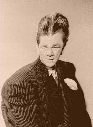

FILM LECTURE SERIES 7000s (C-60)
7001:THE GORILLA OF DR. CALIGARI
Part One Of The Landfrey Film Lectures.(live)
Includes "Fatheads in Love", "Prototypes For The New
Sexton","The Bubo" and "The History of The Cinema".
7002:THE LATHE OF TIME
Part Two Of the Landfrey Film Lectures (radio)
Includes "Arab Science" and "Really Hard Chinese
Mathematics".
|